白い恋人の活用法 [梅吉]
またまた冬の準備のお話ですが・・・・・
今年も登場しました！梅吉さんの白い恋人。
（三年目の白い恋人2018、二年目の白い恋人2017、 初対面の白い恋人2016）
![[猫]](https://blog.ss-blog.jp/_images_e/101.gif) わしのうしろに なんかいてる
わしのうしろに なんかいてる
はっ！これはー！！
最初は様子を伺ってましたw
この白いヤツ、前がパネルヒーター後ろがオイルヒーターとして使える暖房機です。

この白くてアイソの無いヤツがぬくいヤツだとは覚えていた様で
お席をしつらえましたらすぐに座っていただけました＾＾
今年は新たな使い方も！？
きたっ！

パネルの後ろからおとーさんの足を狙うことにした様です0(≧▽≦)0
わっと飛び出してびっくりさせる（してあげる）のが面白い様ですwww
キャトタワーの下にあるので上がってくる暖気でおちりを温めるのも良い様です＾＾
 ↑ガブッと一押し↑
↑ガブッと一押し↑
今年も登場しました！梅吉さんの白い恋人。
（三年目の白い恋人2018、二年目の白い恋人2017、 初対面の白い恋人2016）
最初は様子を伺ってましたw
この白いヤツ、前がパネルヒーター後ろがオイルヒーターとして使える暖房機です。
この白くてアイソの無いヤツがぬくいヤツだとは覚えていた様で
お席をしつらえましたらすぐに座っていただけました＾＾
今年は新たな使い方も！？
パネルの後ろからおとーさんの足を狙うことにした様です0(≧▽≦)0
わっと飛び出してびっくりさせる（してあげる）のが面白い様ですwww
キャトタワーの下にあるので上がってくる暖気でおちりを温めるのも良い様です＾＾
冬支度、始めました。 [梅吉]
皆様のお家で冬の準備が進んでいる様子、ブログで拝見しております。
もちろん我が家でも！
季節の変わり目には（特に）お手伝いに張り切るこのお方・・・
（29秒 掃除機の吸引音がします）
春にも許せなかった掃除機ですが秋にもやっぱりお許しいただけませんでした(ｰ ｰ;)
一体何が気に触るのだろうと
圧縮袋なしの状態で掃除機を畳に吸いつけてみたら・・・喰らい付いてきましたw
しゅい〜んと吸引する音が気に入らないのかな？
幼い頃は掃除機かけているだけで攻撃してきたのでその名残かしら。
でも、梅吉ももう４ちゃいのオ・ト・ナですから今は普通に掃除機は使えてますよ( ´艸｀)

飾り棚のものを避けたらすかさず上る。これもお手伝いのうちですか？
今後は梅吉さんに飾り物になって頂こうかしらwww
以前から欲しかった単眼鏡を買いました！
6倍率です。
美術館等では４倍でも良いそうですが
お寺等で奥にいらっしゃる御本尊様を見たりするには６倍くらいが良いみたい。
こういうものを買ったら・・・・・

やっぱり最初に見るのは「うちの子」ですよねー。
左が目、右がお鼻の先っちょです。よく見えるでしょ。
単眼鏡越しにおっとが撮影してました。ホラー写真ではないですよw
↑ガブッと一押し↑
もちろん我が家でも！
季節の変わり目には（特に）お手伝いに張り切るこのお方・・・
（29秒 掃除機の吸引音がします）
春にも許せなかった掃除機ですが秋にもやっぱりお許しいただけませんでした(ｰ ｰ;)
一体何が気に触るのだろうと
圧縮袋なしの状態で掃除機を畳に吸いつけてみたら・・・喰らい付いてきましたw
しゅい〜んと吸引する音が気に入らないのかな？
幼い頃は掃除機かけているだけで攻撃してきたのでその名残かしら。
でも、梅吉ももう４ちゃいのオ・ト・ナですから今は普通に掃除機は使えてますよ( ´艸｀)
飾り棚のものを避けたらすかさず上る。これもお手伝いのうちですか？
今後は梅吉さんに飾り物になって頂こうかしらwww
以前から欲しかった単眼鏡を買いました！
6倍率です。
美術館等では４倍でも良いそうですが
お寺等で奥にいらっしゃる御本尊様を見たりするには６倍くらいが良いみたい。
こういうものを買ったら・・・・・
やっぱり最初に見るのは「うちの子」ですよねー。
左が目、右がお鼻の先っちょです。よく見えるでしょ。
単眼鏡越しにおっとが撮影してました。ホラー写真ではないですよw
戦いは続く・・・ [梅吉]
ラグビーW杯2019日本大会、閉幕しましたね。

ウェブ・エリスカップ授与式の様子を眺める梅吉さん＾＾

花火に仰け反り気味！？
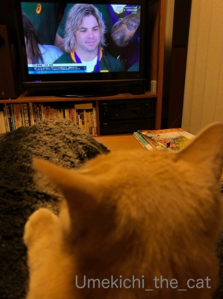
日本チームもベスト８に進んで話題も盛りだくさん
そして台風で中止になってしまった試合もありましたが
大会が大成功に終わって本当に嬉しいです。
ずーっとモヤモヤしていたデクラーク選手が誰かに似ている感・・・・・
ツイッターで発見して爆笑しました(*>艸<)
故：千代の富士関と似てますよねwwwww
デクラーク選手は決勝二日前東京ディズニーランドにいらっしゃったようで
一緒に記念写真を撮った方々のSNSも見かけましたよ＾＾
何かと話題を振りまいてくれた彼、こんな動画まで0(≧▽≦)0
（Twitterやってらっしゃらない方はご覧になれないかも！ごめんなさい＞＜）
さてさて、W杯も終わってわしが しゅやくやで！と張り切っているこのお方。
今後は我が家のソファの上で熱い戦いが繰り広げられる模様です。

久しぶりの小さいながらも楽しい我が家を得て
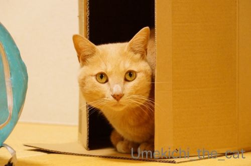
きりりとキメ顔の梅吉さんでした＾＾
昨日は正倉院展に行ってきました。
今日もこれからお出かけの予定です。
皆様のところへのご訪問は夜になりそうですm(_ _)m
↑ガブッと一押し↑
ウェブ・エリスカップ授与式の様子を眺める梅吉さん＾＾
花火に仰け反り気味！？
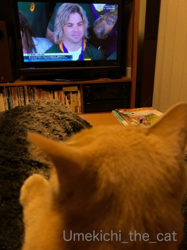
日本チームもベスト８に進んで話題も盛りだくさん
そして台風で中止になってしまった試合もありましたが
大会が大成功に終わって本当に嬉しいです。
ずーっとモヤモヤしていたデクラーク選手が誰かに似ている感・・・・・
ツイッターで発見して爆笑しました(*>艸<)
故：千代の富士関と似てますよねwwwww
デクラーク選手は決勝二日前東京ディズニーランドにいらっしゃったようで
一緒に記念写真を撮った方々のSNSも見かけましたよ＾＾
何かと話題を振りまいてくれた彼、こんな動画まで0(≧▽≦)0
（Twitterやってらっしゃらない方はご覧になれないかも！ごめんなさい＞＜）
さてさて、W杯も終わって
今後は我が家のソファの上で熱い戦いが繰り広げられる模様です。
久しぶりの小さいながらも楽しい我が家を得て
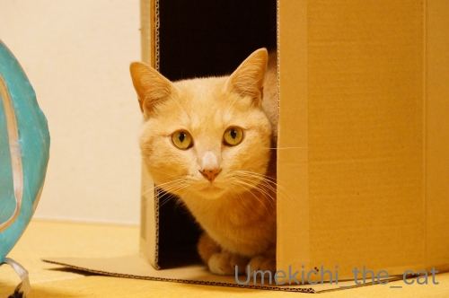
きりりとキメ顔の梅吉さんでした＾＾
昨日は正倉院展に行ってきました。
今日もこれからお出かけの予定です。
皆様のところへのご訪問は夜になりそうですm(_ _)m
10月の終わりはハロウィンでアクビー！ [梅吉]
みなさん、こんにちは！怪獣くんです。
ラグビーW杯2019日本大会も今週末の３位決定戦と決勝でいよいよ閉幕となります。
週末の試合は楽しみではありますがそれで大会が終わってしまうと思うとなんだか複雑。
ああもう、このままずーっと日本で試合していて欲しいくらいです。
恐竜さんはハロウィン参加用兼アクビーW杯用のコスプレでもあります＾＾
ハロウィンのコスプレはもっと「らしい」のを考えてたのですが・・・
ねこさんがねこさんマスクで仮面舞踏会、もいいなぁと思ったのですが（BGMは少年隊♪）
全然使いものにならなかった件(*>艸<)
せっかくなので写真だけはアップしておこうw
最近のクリアボールはこんなことになってます。
肌寒い日に上から毛布をかけたらボールの中でむぎゅっ♡となってました0(≧▽≦)0
【追記】
満月広場でハロウィンのパレードが始まってます！
ことしは「ももうめ」ユニットとしてすももちゃんと同じお衣装で参加です！
みなさん見てくださいね＾＾
ちなみに梅吉のコスプレ写真は去年のハロウィンの時のものでーす。
不平不満が顔にでる猫 [梅吉]
最近続いた歴史的出来事の瞬間。
即位礼正殿の儀の時も（令和元年10月22日火曜日 友引）
【注意】私の足がローテーブルの上に乗っているのは梅吉が膝にいるからです。
お行儀悪くてｽﾐﾏｾﾝ・・・
でも！こうやって足を伸ばしていないと梅吉が落ちそうになるのです。
決していつもこんな風ではありません。
と、言い訳が長い（爆）
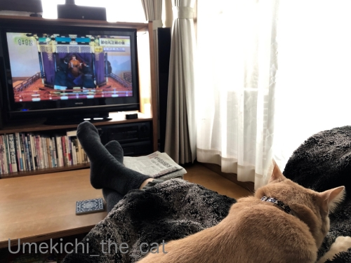
イングランドがオールブラックス を打ち破った時も
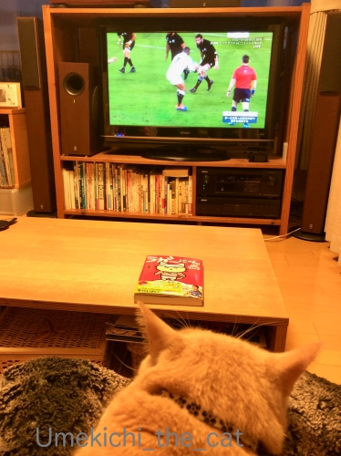
お膝でちゅうちゅう( ´艸｀)
日常において100%自由で大体ご機嫌で楽しそうな梅吉さんですが
不平不満ははっきりとお顔に出ますよ！

ブラッシング中、あたま首回りは喉をぶるぶる鳴らして「良きに計らえ」なんですが
おちりに近づくにつれてお口がお怒りモード。
（5秒 音無です＾＾）
お目目も三角になってて相当怖いですけどね(*>艸<)
時々この怒ったお口のままでブラシする私を見てて笑えますwww
↑ガブッと一押し↑
即位礼正殿の儀の時も（令和元年10月22日火曜日 友引）
【注意】私の足がローテーブルの上に乗っているのは梅吉が膝にいるからです。
お行儀悪くてｽﾐﾏｾﾝ・・・
でも！こうやって足を伸ばしていないと梅吉が落ちそうになるのです。
決していつもこんな風ではありません。
と、言い訳が長い（爆）
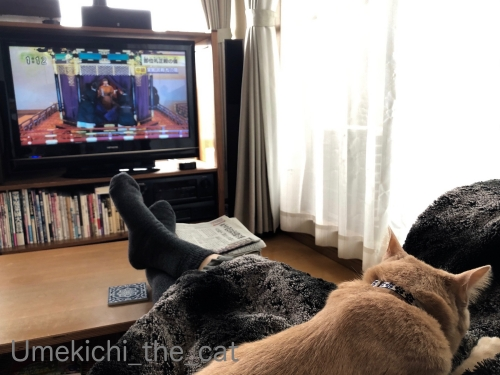
イングランドがオールブラックス を打ち破った時も
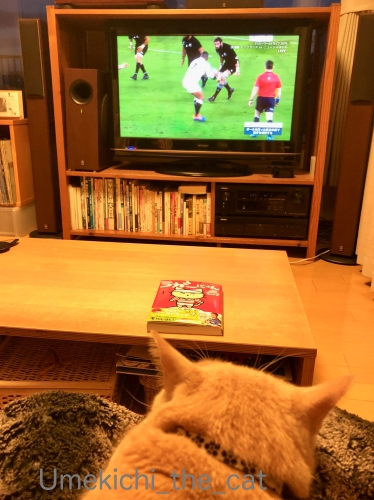
お膝でちゅうちゅう( ´艸｀)
日常において100%自由で大体ご機嫌で楽しそうな梅吉さんですが
不平不満ははっきりとお顔に出ますよ！
ブラッシング中、あたま首回りは喉をぶるぶる鳴らして「良きに計らえ」なんですが
おちりに近づくにつれてお口がお怒りモード。
（5秒 音無です＾＾）
お目目も三角になってて相当怖いですけどね(*>艸<)
時々この怒ったお口のままでブラシする私を見てて笑えますwww
猫をポケットいっぱいに詰め込んで [梅吉]
先日購入したニトリのペットが入れる膝掛け。
梅吉さんをお誘いしたら意外にもあっさりとIN！
でも別の問題が。
ぜひ動画で見て下さい。
（35秒 音無です＾＾）
ぎゅうぎゅう詰め込まなければならなかった・・・(^-^;
体重約５kg、骨格のしっかりした梅吉にはポケットがちょっと小さかったです。
このみっちみちに詰まった感じもたまらないんですけどね( ´艸｀)
もっとふんわりと優しくポケットに入る様を想像してたんですが
梅吉が入りたがったら「ほな、やりまひょか！」とぐいぐい一押しする感じになりそうでーすwww
嬉しい誤算は飼い主が手を入れるところからおしっぽを出せたこと。
このおかげできゅうくつさは感じてないみたいです＾＾
･゜ﾟ･*:.｡..｡.:*･゜ﾟ･*:.｡. .｡.:*･゜ﾟ･*･゜ﾟ･*:.｡..｡.:*･゜ﾟ･*:.｡..｡.:*･゜ﾟ･*
ラグビーW杯2019、ブレイブブロッサムズの戦いが終わってしまいました。
南アフリカには完敗でした。
本当に何もさせてもらえませんでした。
が、あれほど日本対策をされたこと
試合終了時間が過ぎても南アフリカがなおもトライを奪おうと試合を続けたこと・・・
これで日本のラグビーは本当に世界に認めてもらえたんだ、とも感じました！
「徹底的に叩きのめさなければならない相手」と扱われたことが嬉しかった。
負けちゃったし良いところはほとんどなかったけど日本にとって価値ある試合。
あまり話題にされてませんがこの試合の Player of the Match は南アのデクラーク選手でした。
「またあんたかいっ！」というくらいどこにでもいて
たくさんのプレーに絡んで呆れるぐらい凄かった。
スポーツ選手としては小柄な身長172㎝。「体が小さい」は言い訳にならないと証明してくれました。
日本人選手もがんばれ！！
日本の試合が終わってしまったので気の抜けた感はありますが試合はまだまだ続きます。
決勝はスプリングボックス（南ア）v オールブラックス（NZ）希望！
予選プールでスプリングボックスが負けてますが同じ轍は踏まないはず。
デクラークとアーロン・スミスのガチな対決が見たい！！
決勝は 11月2日（土） 18：00〜！！
みなさん、忘れないでねー。
（準決勝も３位決定戦もあるけどね）
そうそう！
ワールドカップの記念切手が発売になってます。
こことここ。
お好きな方は是非＾＾
【追記】kikiさんへ
前記事の手袋、ご心配いただき恐縮ですm(_ _)m
あれは・・・日よけなんです。
おばちゃん、手も日に焼けちゃうので近所へのお買い物時は手袋必須。
首にストールも巻いて完全防備で怪しく外出していますwww
↑ガブッと一押し↑
梅吉さんをお誘いしたら意外にもあっさりとIN！
でも別の問題が。
ぜひ動画で見て下さい。
（35秒 音無です＾＾）
ぎゅうぎゅう詰め込まなければならなかった・・・(^-^;
体重約５kg、骨格のしっかりした梅吉にはポケットがちょっと小さかったです。
このみっちみちに詰まった感じもたまらないんですけどね( ´艸｀)
もっとふんわりと優しくポケットに入る様を想像してたんですが
梅吉が入りたがったら「ほな、やりまひょか！」とぐいぐい一押しする感じになりそうでーすwww
嬉しい誤算は飼い主が手を入れるところからおしっぽを出せたこと。
このおかげできゅうくつさは感じてないみたいです＾＾
･゜ﾟ･*:.｡..｡.:*･゜ﾟ･*:.｡. .｡.:*･゜ﾟ･*･゜ﾟ･*:.｡..｡.:*･゜ﾟ･*:.｡..｡.:*･゜ﾟ･*
ラグビーW杯2019、ブレイブブロッサムズの戦いが終わってしまいました。
南アフリカには完敗でした。
本当に何もさせてもらえませんでした。
が、あれほど日本対策をされたこと
試合終了時間が過ぎても南アフリカがなおもトライを奪おうと試合を続けたこと・・・
これで日本のラグビーは本当に世界に認めてもらえたんだ、とも感じました！
「徹底的に叩きのめさなければならない相手」と扱われたことが嬉しかった。
負けちゃったし良いところはほとんどなかったけど日本にとって価値ある試合。
あまり話題にされてませんがこの試合の Player of the Match は南アのデクラーク選手でした。
「またあんたかいっ！」というくらいどこにでもいて
たくさんのプレーに絡んで呆れるぐらい凄かった。
スポーツ選手としては小柄な身長172㎝。「体が小さい」は言い訳にならないと証明してくれました。
日本人選手もがんばれ！！
日本の試合が終わってしまったので気の抜けた感はありますが試合はまだまだ続きます。
決勝はスプリングボックス（南ア）v オールブラックス（NZ）希望！
予選プールでスプリングボックスが負けてますが同じ轍は踏まないはず。
デクラークとアーロン・スミスのガチな対決が見たい！！
決勝は 11月2日（土） 18：00〜！！
みなさん、忘れないでねー。
（準決勝も３位決定戦もあるけどね）
そうそう！
ワールドカップの記念切手が発売になってます。
こことここ。
お好きな方は是非＾＾
【追記】kikiさんへ
前記事の手袋、ご心配いただき恐縮ですm(_ _)m
あれは・・・日よけなんです。
おばちゃん、手も日に焼けちゃうので近所へのお買い物時は手袋必須。
首にストールも巻いて完全防備で怪しく外出していますwww
タッチ、タッチ、タァーッチ！ [梅吉]
ご飯をもらうときはお約束の
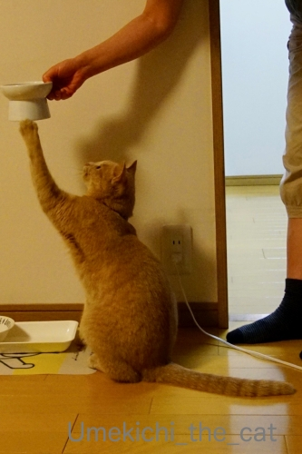
ターッチ！
三回タッチするのがデフォルトなんですが
お腹が空いていて気持ちが逸るのか連打になることが多いですw

おやつをもらうときもターッチ！
どちらの写真も左手が上がってますね。梅吉は左利き？
でも夜中に私を起こすときは右手でていてい。
左右器用に使い分けるスイッチヒッターみたいなかんじなのでしょうか(≧▽≦)
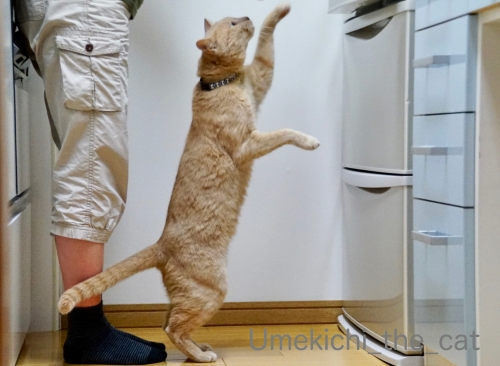
冷蔵庫の前では立ち上がってターッチ。
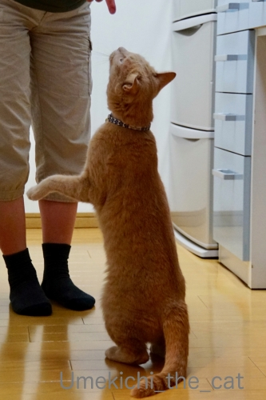
おかーさんの指には・・・タッチはないけど立ち上がってくんくん。

PCの前の皆さんにもターッチ♡
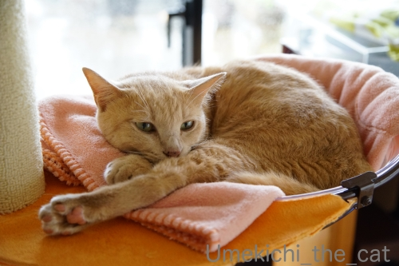
あちにも たっちしてええで
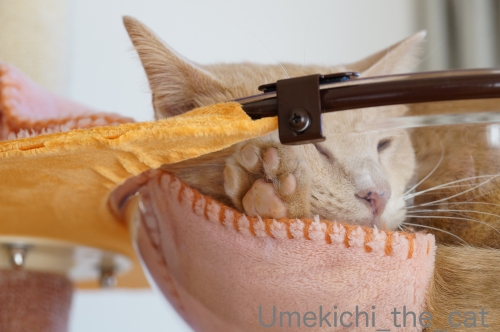
クリアボウル生活も順調です！
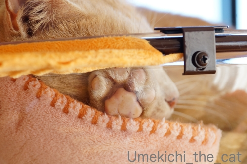
しつこいわっ！って思われちゃいそうですが
嬉しいので何度も載せちゃいますよ、にくきゅううううう。
↑ガブッと一押し↑
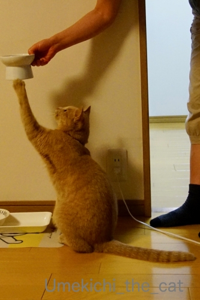
ターッチ！
三回タッチするのがデフォルトなんですが
お腹が空いていて気持ちが逸るのか連打になることが多いですw
おやつをもらうときもターッチ！
どちらの写真も左手が上がってますね。梅吉は左利き？
でも夜中に私を起こすときは右手でていてい。
左右器用に使い分けるスイッチヒッターみたいなかんじなのでしょうか(≧▽≦)
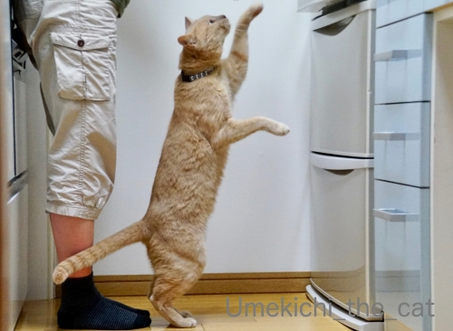
冷蔵庫の前では立ち上がってターッチ。
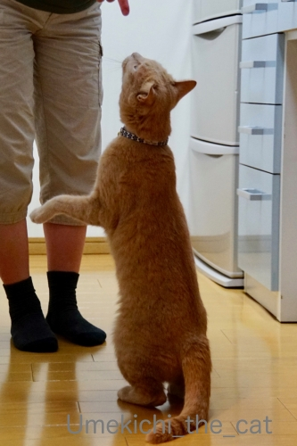
おかーさんの指には・・・タッチはないけど立ち上がってくんくん。
PCの前の皆さんにもターッチ♡
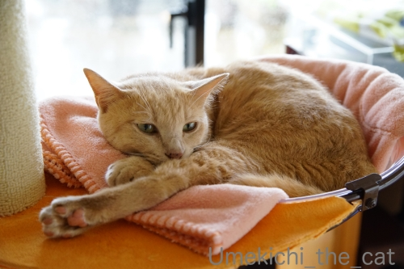
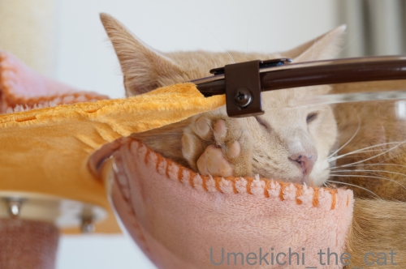
クリアボウル生活も順調です！
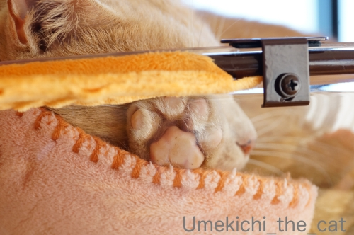
しつこいわっ！って思われちゃいそうですが
嬉しいので何度も載せちゃいますよ、にくきゅううううう。
ラグビーのある休日 [梅吉]
お休みの日、梅吉さんをお膝に乗せてラグビー観戦。
VSスコットランド戦、本放送、再放送、録画を合わせて何度見たかしら・・・( ´艸｀)
梅吉さんはちゅうちゅうに励んでます＾＾
肌寒くなってきたら急にひっつき虫になりましたよ。

はっ！おかーさん どつきあってたで・・・
紳士だってエキサイトするんですよ。むしろこれが普通です。
試合前・試合中あれこれあってもノーサイドになればお互いリスペクトし合うのです。
それがラグビー精神！！紳士的振る舞い。
ジェイミー・リッチー選手、日本チームからのプレゼントの模擬刀を受け取ってにっこりの図。
ぜったいあかんやつや おもったけど ちゃうねんな・・・

時々ブラッシングタイムなど挟みつつ(≧▽≦)
年中換毛期っぽいですが、このところ更に抜けるようになりました。
あんひとは ちかいうちいんたいして おいしゃさんめざすんやて えらいもんやなぁ
おいしゃさんになっても あいどるっぽいしゃべりかたなんかなw
きっとかんじゃさんのにんきもんやでwww

わらわへんて？ これめっちゃえがお ちゃうのん？？
ジェイミーも男を上げましたね！
オフロードパス、エディ時代には禁止されていたもの。
導入には選手からの反発もあったとか。
理解を得るのは大変だったと思いますが、今では大きな戦力になってます。
他のチームの戦い方を見ても勝つためにはオフロードパス無しは考えられないです。
ジェイミー、ありがとう！！
今年は膝掛け買わないもん！と思っていたのですが・・・・・
(梅吉に新しいものを奪われるので毎年買っている）

（画像はニトリのHPよりお借りしました）
今年も買ってしまった( ´艸｀)
ニトリのペットが入れる膝掛け！
ポケットがついていてそこに猫様に入っていただく仕様。
ポケット左右の端が空いていてそこから手を入れる事が出来ます。
この写真みたいにすんなり梅吉が入ってくれるとは思ってませんけど・・・
この冬、どうなるのか楽しみです＾＾
↑ガブッと一押し↑
VSスコットランド戦、本放送、再放送、録画を合わせて何度見たかしら・・・( ´艸｀)
梅吉さんはちゅうちゅうに励んでます＾＾
肌寒くなってきたら急にひっつき虫になりましたよ。
紳士だってエキサイトするんですよ。むしろこれが普通です。
試合前・試合中あれこれあってもノーサイドになればお互いリスペクトし合うのです。
それがラグビー精神！！紳士的振る舞い。
ジェイミー・リッチー選手、日本チームからのプレゼントの模擬刀を受け取ってにっこりの図。
時々ブラッシングタイムなど挟みつつ(≧▽≦)
年中換毛期っぽいですが、このところ更に抜けるようになりました。
おいしゃさんになっても あいどるっぽいしゃべりかたなんかなw
きっとかんじゃさんのにんきもんやでwww
ジェイミーも男を上げましたね！
オフロードパス、エディ時代には禁止されていたもの。
導入には選手からの反発もあったとか。
理解を得るのは大変だったと思いますが、今では大きな戦力になってます。
他のチームの戦い方を見ても勝つためにはオフロードパス無しは考えられないです。
ジェイミー、ありがとう！！
今年は膝掛け買わないもん！と思っていたのですが・・・・・
(梅吉に新しいものを奪われるので毎年買っている）
（画像はニトリのHPよりお借りしました）
今年も買ってしまった( ´艸｀)
ニトリのペットが入れる膝掛け！
ポケットがついていてそこに猫様に入っていただく仕様。
ポケット左右の端が空いていてそこから手を入れる事が出来ます。
この写真みたいにすんなり梅吉が入ってくれるとは思ってませんけど・・・
この冬、どうなるのか楽しみです＾＾
キャットタワーにまつわるあれこれ [梅吉]

キャットタワーのポール部分、見慣れないものが巻きついているのを発見した梅吉さん。
指導者、再びw
指導者の方、100均でカーペットを買ってきてポールに巻きつけました＾＾
こうやって使うんですよーと再熱演。
が、全く興味なしのお顔をする梅吉さん。

1㎜も関心ありません(⌒-⌒;

サービスショット♡

やっと視線を向けるもものすごく眠そうです。
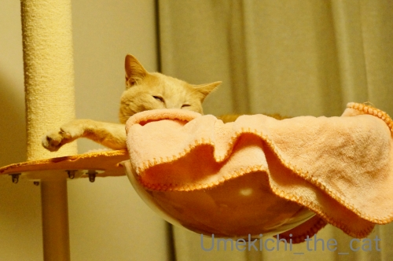
今回の実演はうまく伝わらなかったようでした。
・・・と！
最近梅吉がクリアボールに入り浸ってます。ブランケット付きですけれどね。
ブランケットはしばらくこのまま使いますが・・・・・

小細工してます0(≧▽≦)0

にくきゅうううううううう♡
台風21号、川の氾濫が相次ぎましたね。
被害に遭われた方、お見舞い申し上げます。
秋を楽しむ [梅吉]
なかなか爽やかな秋晴れが続かない今秋ですが
気持ちの良いお天気の日には思いっきりお外を楽しむ梅吉さん＾＾


お外の醍醐味！
それは植木鉢に頭を擦り付けることー！
・・・・・なのでしょうかwww

ほっぺも忘れてはいません。


気持ち良いですか？
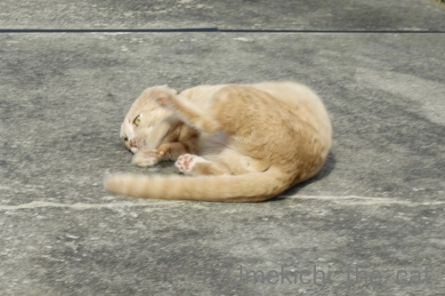


「ねこ舞踏 秋に寄せる喜びの舞」( ´艸｀)
朝晩はひんやり感じられるようになってきましたね。
我が家ではお膝ねこ、お布団ねこが観測されております。
この時期は寝具選びに迷います。
我が家はまだ夏の寝具（ガーセケットに夏用の肌かけ布団の組み合わせ）なんですが
もう羽毛布団を使っていらっしゃるなんてお話もちらほら・・・
羽毛布団、圧縮してしまってあるからお天気の良い日に天日干しして
復活させておかなくちゃ！
↑ガブッと一押し↑
気持ちの良いお天気の日には思いっきりお外を楽しむ梅吉さん＾＾
お外の醍醐味！
それは植木鉢に頭を擦り付けることー！
・・・・・なのでしょうかwww
ほっぺも忘れてはいません。
気持ち良いですか？
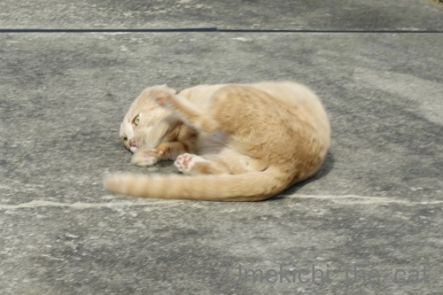
「ねこ舞踏 秋に寄せる喜びの舞」( ´艸｀)
朝晩はひんやり感じられるようになってきましたね。
我が家ではお膝ねこ、お布団ねこが観測されております。
この時期は寝具選びに迷います。
我が家はまだ夏の寝具（ガーセケットに夏用の肌かけ布団の組み合わせ）なんですが
もう羽毛布団を使っていらっしゃるなんてお話もちらほら・・・
羽毛布団、圧縮してしまってあるからお天気の良い日に天日干しして
復活させておかなくちゃ！

カフェオレ色の梅吉

梅吉 2023年8月10日 永眠


梅吉と出会った譲渡会

犬猫の理由なき殺処分ゼロ
妄想広告
UMEKICHI 光

爆発的に早い！
時々攻撃的！
Thanks to Mr.Boss365
爆発的に早い！
時々攻撃的！
Thanks to Mr.Boss365